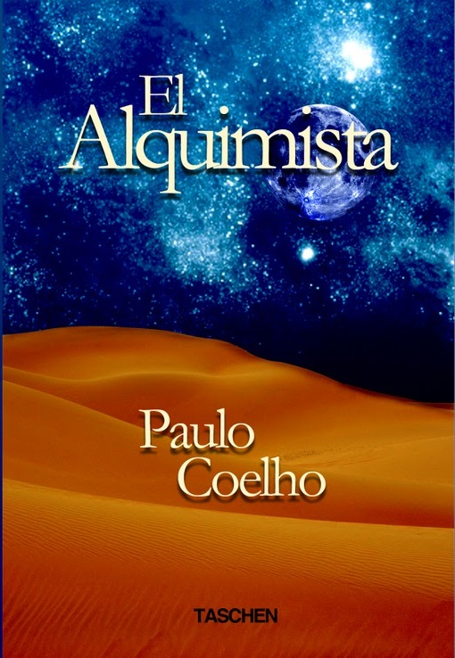

| Orden |
Portada |
Nombre del Libro |
Breve descripción |
URL |
| 1 |

|
No diga sí cuando quiera decir no |
¿Se le hace prácticamente imposible enfrentarse a personas que «siente» superiores a usted? ¿Le cuesta mucho
armar
sus derechos o establecer relaciones?
Los autores de No diga sí cuando quiera decir no, desde la premisa de que más importante que cuestionar el
porqué
de tales actitudes es abordar la forma de transformarlas, proponen una técnica de base conductista cuya eficacia
ha sido ampliamente demostrada por ellos mismos. La denominan Aprendizaje Asertivo (AA), y en líneas generales
consiste en habituarse a armar, con serenidad pero con decisión, las propias exigencias vitales. |
Amazon
|
| 2 |

|
La Fuerza de Sheccid |
Sin duda nos encontramos ante una novela magistral, llena de conceptos de esperanza y valores humanos. Iniciada su
lectura resulta difícil dejarla. El argumento es intenso, el mensaje comprometedor, el final inesperado. Todo se
une para hacer de este, un libro de gran impacto. La Fuerza de Sheccid narra una historia verídica de adolescentes
emprendedores. Describe la energía vivificante del primer amor y de los grandes anhelos de juventud. Motiva a
reforzar ideales, a terminar con libertinajes y a reencontrar los principios éticos. Nunca antes, Carlos
Cuauhtemos Sanchz, había escrito una novela tan personal en la que nos revelara como llego a ser el autor de los
best sellers.
|
Amazon
|
| 3 |

|
No diga sí cuando quiera decir no |
¿Se le hace prácticamente imposible enfrentarse a personas que «siente» superiores a usted? ¿Le cuesta mucho
armar
sus derechos o establecer relaciones?
Los autores de No diga sí cuando quiera decir no, desde la premisa de que más importante que cuestionar el
porqué
de tales actitudes es abordar la forma de transformarlas, proponen una técnica de base conductista cuya eficacia
ha sido ampliamente demostrada por ellos mismos. La denominan Aprendizaje Asertivo (AA), y en líneas generales
consiste en habituarse a armar, con serenidad pero con decisión, las propias exigencias vitales. |
Amazon
|